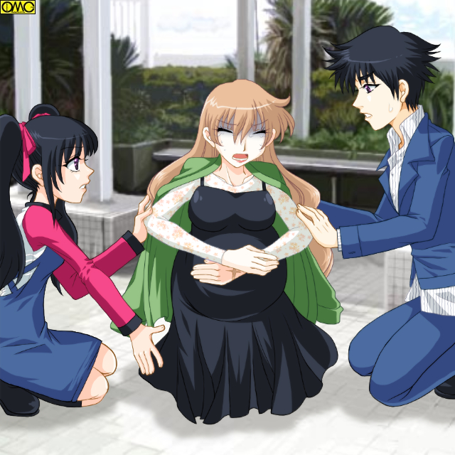
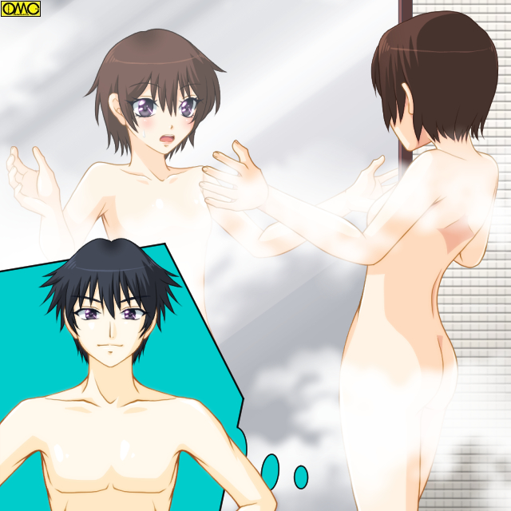

とある温泉街。その玄関である駅に一人の青年が帰ってきた。
「あんまり変ってないな」
まだ若いのにどこか疲れたような青年は辺りを見回す。懐かしい街。だが帰ってきたくなかった街。
（仕方ないか…）
ため息をつく。四年で卒業はしたものの就職浪人の憂き目に会い結果として実家に一度帰ることになったのではため息も出る。
「お兄ちゃーん 」
若い娘が物思いにふける青年を呼ぶ。
「温子」
振り向いた青年は妹と思われる少女の方へと歩み寄る。迎えの車へと乗り込む。
その先に待つ運命も知らず……
湯の街奇談
第一話（リライトバージョン）
作：城弾
ひた走る車の中で懐かしそうに話しかける温子。
「久しぶりだね。お兄ちゃん。お正月にも帰ってこないんだもん」
「はは。帰る金もなくてな」
これはウソだった。彼…宝田泉が大学進学で家を出たのも、帰ってこなかったのもこの寂れた温泉街が嫌だったからだ。
「しっかし…四年は短いようで長いな。温子。お前がもう免許を取っていたとは驚いたぞ」
「もう。何言ってんのよ。去年の夏休みに取ったんだよ」
宝田温子は１９歳。高校卒業後家事手伝いで実家に残っていた。
愛嬌のあるたれ気味の目とツインテールが実際の年齢より若く見せていた。
身長も１５３だし胸も薄め。まだ高校の制服が着られるのは自慢なのかどうなのか。
一方の兄・泉は２２歳。身長１７０センチで体重５０キロ。華奢といって良い。
女顔とまでは言わないが比較的小さい顔で子供のころならよく女の子に間違われていた。それがひどく嫌だった。だから間違われないために絶えず髪を短く刈り込んでいた。
性別を間違わせた何より決定的なのがその名前。
父親が「温泉宿」にちなんで最初の子を男女問わず『泉』と名づけるつもりでいたのだ。
もちろん温子が同じ発想なのは言うまでもない。
だから泉はこの温泉街には帰ってきたくなかった。子供のころ名前でいやな思いをしたこの町には。
しかし疲れていた。都会の暮らしに。故郷が懐かしくなってしまった。帰りたくなかった街が無性に恋しかった。
車を走らせていると一人の女性が道端で蹲っているのが見えた。車を止めて駆け出す二人。
「どうしました？」
女性は苦痛で返答が出来ない。やっとの思いで顔を上げると泉の顔を見て驚いたような表情をした。
「？」
怪訝な表情の泉。だが女性はうつむいて視線をそらした。
「お兄ちゃん大変。この人、妊婦さんだよ」
言われて見れば腹が大きい。
「陣痛？」
そう連想するのももっともだ。救急車を呼ぼうと思ったがすぐ先に病院がある。もしかするとそこにいく途中で倒れたのかもしれない。
よくみると足元に携帯電話が落ちている。助けを呼ぼうとして苦痛のあまり落としてしまったのかもしれない。
むしろこのまま連れ込んだ方が早いと判断した二人は、妊婦を乗せて病院へと車を走らせる。

このイラストはＯＭＣによって作成されました。
クリエイターの高天リオナさんに感謝
車に乗せる際に彼女の左手の甲が見えた。
なぜか泉の姿を見てからずっと隠していた場所だが苦痛でそれどころではなくなったのだ。
（あれ？ この傷？ 翔の奴にそっくりだ。偶然ってあるものだなぁ）
彼が連想した『翔』と言う人物は高校時代の悪友だった。
問題の左手の傷跡も不良グループ相手に戦ったときの武勇伝だ。
しかし『翔』は男でこの人はまごうことなく女性。何しろ妊婦だ。
だから絶対に他人だが、見れば見るほどそっくりな傷だった。
女性は美人だった。長い髪は栗色に染まり身だしなみ程度だが化粧もきちんとしていた。薄いピンクの口紅が色っぽい。
なんと言うか見ているだけでときめくような女らしさは、お腹の子供が醸し出させているのか。優しい顔も母性からか。
胸が大きいのは出産が間近なせいか、元からか。当然だが黒いマタニティドレスに包まれた腹部は大きく膨らんでいた。
手には買い物籠を持っていたから買い物に出て痛みにうずくまってしまったらしい。
（あいつは彼女がいたからここに残ったはずだが…どうしているかな。一度会いに行こうか）
「お兄ちゃん。ついたよ」
病院に横付けしていた。この手の急患はよくある。迅速な対応だった。
事情を説明することもありしばらく付き合っていた。とりあえず入院したのを見届けた。
一つ落ち着いたこともあり本来の目的地。実家へと行くことにした。
宝田家は温泉宿を営んでいた。そして住居部分。父親の部屋で久しぶりの対面をしていた泉である。
「そうか…」
それきり何も言わない。
泉の父。宝田幸太郎は４４歳にしては豊か過ぎる黒髪をかきあげやがてニカッと笑う。
「まぁいい。疲れただろう。とりあえず湯にでもつかってゆっくりして行け」
激しく怒鳴られるかと思ったが就職浪人を気遣ってか優しかった。いや。この父親は不自然なほど優しすぎた。
だが泉は深く考えず四年ぶりの自室に向かった。
「はは。時が止まったみたいだな」
大学に行くために家を出た朝。そのときとまったく変っていない。定期的に掃除されていたのか埃もなく綺麗だ。ベッドもかび臭くない。
「はぁーっ」
泉は帰郷のための列車旅。そして就職活動で疲れた体を休めるべくベッドへと身を沈めた。
四年の空白を感じさせないなじんだ感触に安堵を憶える。
ものの三分もしないうちに豪快ないびきを立て始めた。
本当に疲れ果てていた。
「…ん？」
まだ寒い季節。ベッドにいたものの布団をかける前に寝入ってしまったので妙に寒い。ぶるっと寒さで目が覚めた。
時計を見ると午後四時。すでに山間が夕日に染まりつつある。
「メシ前に風呂にするかな」
彼は体を温めるべく勝手しったる温泉へと出向いた。
露天風呂。
夕日に染まるといえどまだ明るく、都会から来た旅人はさすがに露天風呂に入るためといえど裸体を晒したがらない。貸しきり状態だった。
「はぁー。ここにいたときは何がそんなにありがたいのかと思ったけど、都会にいたら無性に恋しかったな。今ならわかるぜ。ごくらくごくらく……ってお約束だな」
誰もいない。いくつかの温泉でこの時間帯だと人の少ない場所を心得ていた。
一人のんびりとしていた。その時だ。
「ん？」
泉はふともっと奥の場所から『呼ばれている』気がした。
「なんだ？……あの林の中か…」
彼は脱衣所に向かうと服を纏い、導かれるようにふらふらとその場所へといく。
宝田温泉。帳簿をつけながら幸太郎は温子に問いただす。
「ん？ 温子。予約の佐藤さんは宿帳をつけなかったのか？」
さすがにコンピューターを導入しているが、チェックインの際には昔ながらの宿帳をつけてもらっていた。
「え。到着が遅れるって電話あったよ」
「ああ。そうか。それなら……おい。すると『子宝の湯』は未だ誰も入ってないのか？」
「えーと…そうなるね」
のんきな温子と青ざめる幸太郎。
「温子。お前ちょっといって入って来い」
凄まじい慌てぶりの幸太郎である。
「えー。やだよ。あたしそんなに太ってないし」
「何もせんよりましだ。拙い。泉より先に客があるはずだから問題ないはずだったが……泉はどこだ？」
その泉は誘われるままに林の中に。
そこにはここで生まれ育った泉でさえ知らない温泉が涌いていた。露天風呂の形だ。
「こんなところがあったのか……しかしなんていい匂いだ。まるで女の匂い…」
一人しかいないのに恥ずかしくなる。
そこは人知れず沸いていた温泉なのにちゃんと脱衣所の小屋がある。
岩で壁が出来ている。そして立て札で「子宝の湯」と。
「子宝の湯？ 女用かな。男には意味がないけどな。さて。この様子じゃいわゆる秘湯。ちょっと失礼して」
なぜか入らずにいられなかった。
彼は脱衣所で裸になると、すでに別の湯で体を洗っていたこともありそのまま入ってしまう。
泉の部屋。誰もいない。顔面蒼白の幸太郎。冷や汗の温子。
「い、いかん。万が一と言うことがある。早く『子宝の湯』へ」
二人は慌てて林の中へと向かう。
（なんて気持ちのよさだ……文字通り体がとろけそうだ……）
泉は至福の表情でいた。しばらくは思考が停止していた。それほどまでに気持ちがよかった。
（なんか肌がつるつるになっているし。女が温泉を重宝するのももっともだな）
彼は気がつかなかった。その腕に産毛すらなくなっていたことを。もっとよく触ればその肌触りが変っていたのもわかったであろう。
「泉―っっっ」
「おにいちゃーん」
「親父？ 温子？」
父親はともかく妹といえど若い娘の前で裸体を晒したくなかったいずみは肩までつかる。
やがて父親と妹がたどり着く。しかし肩までどっぷりつかっている姿を見て膝を折る。
「しまった！ きちんと注意すべきだったか……」
「え？ ここって別料金で入る温泉なの？ ごめんごめん。すぐ上がるよ」
ここでいずみは違和感を覚える。声の通りがよすぎる。
（なんだ？ 喉の調子が？）
屋根のある風呂なら反響でエコーがかかりいい声に聞こえる。
だがここは露天風呂。エコーのかかりようがない。さらにはその声がまるで童女のそれと。
「おにいちゃん…脱衣所に姿見あるから見てみたら」
まだ気丈な温子が冷静に言う。どうも『男』と『女』で受ける衝撃が違うようだ。
「ん？ ダイエット効果でもあるのか。どれ」
軽口を叩いて上がろうとすると、幸太郎が背を向け温子が凝視していた。
「おいおい。逆でしょ？」
「ううん。あってる」
（？ まぁいいか。肉親だし）
そう思っていずみは湯船から体を出す。その腕が華奢になっているのに違和感を覚えた。力も出ない。
それでもなんとか腰も出したが、股間を隠すためにタオルを当てたときに気がついた。
「？………ない？ ど……どういうことだ！？ 俺のあそこが」
股間をよく見ても２２年間慣れ親しんだものがない。
「だから姿見……」
あられもないポーズにさすがに赤面した温子が言うと、いずみはものすごい勢いで脱衣所へと向かい姿見に全身を映す。
鏡に映るその顔は確かにいずみのそれ。
だが全体的に丸みを帯び優しげになっていた。決定的なのが眉。太かったものが柳眉に。
髪の毛は元の長さだったが、つんつんと立っていたはずがしなって張り付いていた。濡れたことを考慮しても柔らかすぎる。
それほどあったわけではない筋肉だが、ほとんどなくなり丸くなっていた。
胸元はほんの僅かだがふくらみ、例えるなら成長途中の女児のようだった。
一番変化したのは腰だった。大きく張り出している。安産型といえる。
ウエストは細くくびれていた。
肌はきめ細かく白く輝いていた。
そしてどの角度から何度見ても男のシンボルはなくなっていた。

このイラストはＯＭＣにって作成されました。
クリエイターの高天リオナさんに感謝！
「お、俺……お……女に？」
彼……彼女はそのまま卒倒した。
宿につれて帰られたいずみは、そのまま寝かされていたが目を覚ます。
「気がついたか」
容態を見ていたらしい幸太郎。
｢親父…？！｣
いきなり半身を起こすと自分の腕を見る。白い肌。胸元を叩くとまだ薄いが僅かに柔らかい感触が。
父とはいえど人の見ている前で布団に隠れた下半身をまさぐる。青い顔になり｢やっぱり……ない｣とつぶやく。
「夢じゃなかったのか……」
「ああ。あの湯に入った男は例外なく女になってしまうのだからな。失敗だった。先に客が入るから『魔力』も発動されないと思い込んでいた」
「どういうことだよ！？ あれは一体……」
その問いには答えず幸太郎は一着の浴衣を出す。従業員が使うものだ。
それが明らかに女物で難色を示したが、着てみるとしっくりくる。
「論より証拠だな。行くぞ」
親子は再び「子宝の湯」へ。
（あれ？ 今度はそんなに入りたいとは思わない。昼間はどうしようもなく入らずにいられなかったのに）
「ついたぞ」
思考は父親の声で中断された。
二人は従業員の姿だった。実際に幸太郎はここの主だからウソではない。この姿なら客に無視される。二人は作業する振りをしながら温泉を観察する。
一人の女性客が入っていた。軽く見ても９０キロを超えていそうな肥満体だ。あれでは心臓にもよくなかろう。
太った女は恍惚とした表情で湯に浸かって、やがていたがものすごい汗をかき始める。
サウナでもここまではあるまいという大量の汗だ。
（そんなに熱かったかな？ それとも長湯？ のぼせるぞ）
いずみはそう思うが幸太郎は動かない。やがて太った女はろうそくが融けるようにしぼんでいく。
（げっ？！）
怪現象に思わず声を出しかけるいずみだったがかろうじて止める。
女はどんどんと汗をかきしぼんでいく。
不思議なことに皺にはならない。三十分もするころ上がる。
そのころには推定１５８センチに対して、５０キロ中盤くらいにまでなっていた。
胸だけは立派でなおかつ張りがあり、肌も健康的にピンク色をしていた。
縮んでみると意外に美人とわかる。
「やったわ。噂は本当だったのね。これで十万円なら安いものよ」
身軽になった女は喜び勇んで脱衣所へ。それを見送る幸太郎たち。
「……何なんだ？ 俺を女にしたくらいだからあの女が男にでもなるかと思ったら、むしろ女としては痩せて得したんじゃないか」
「そう。肥満は心臓に負担をかける。それでは健康な出産は望めない」
「健康な出産？ 『子宝の湯』だからか？」
「もう一人が来るぞ。さりげなく。そしてよく見ろ」
今度は対照的に血色の悪い痩せた女だった。冷え性じゃないかと勝手に決め付けたくなる。
こちらも入っているうちに肌の色がほんのりとピンクに。だが先刻の客と違うのは汗をかかないことだ。
やはり三十分もしたころ。彼女は唐突に上がった。
「お腹空いたわ。どうして？ 今ならどんぶりいっぱいは食べられそう」
実は彼女は極端な小食。しかも偏食だった。
「ああっ。ガマンできない。すぐに宿に戻って…」
彼女も脱衣所に駆け込み浴衣をまとう。それを見送ってから
「もういいだろう。こっちも戻るぞ」と幸太郎に言われて戻ることにした。
「親父。何なんだよ。あれは？」
戻るなりいずみは尋ねた。いずみは連れられて幸太郎の和室へと入る。
「まずあの湯だ。あれは子宝の湯」
「ああ。聞いたぜ。しかしそれてどうして痩せたり食欲を増したりするんだ。まして…」
結論を急ぐいずみを制して幸太郎が説明する。
「子宝を得る為にはまず母体が健康でなければならない。あの湯はな、入ったものを正常な出産のできる体にする効能があるのだよ」
「だから太った女は細くなった？」
「うむ。あれでは心臓の負担も並大抵ではない。そして子供にもいい影響はあるまい。だから汗とともに脂肪を流してしまったのだ」
その脂肪はどこに……とはあまり考えたくないいずみである。
「次のお客さんもそういうことじゃな。血行を良くして食欲の増進。これで体力もつくだろう」
「そこまではいい。どうして俺がこんな体に」
「だから言っただろう。『入った者を正常な出産を出来る体にする』と」
そこまで言われて考えがまとまった。
「まさか……男が入ると無効ではなくて出産のできる体……つまり女になってしまう？」
拝呈の意味でコクリと頷く幸太郎。
「どうして教えてくれなかったんだよ？」
「子宝の湯は女湯。男のお前がいくわけはない。例え覗く気にはなっても入るまではな。だから逆に好奇心を持たせないために伏せていたのだが…仇となったか」
「……それはわかった。けどあの時は誘われるように」
「ああ。実は久しぶりの客でな。あまりに間が開くと『子宝の湯』の魔力が暴走するようだ。本当なら先にあの太ったご夫人が入って、お前にはその魔力が届かないはずだったが」
「だから二度目のときはそんなに入りたいと思わなかったのか……それにしてもいくら金づるでもそんな危険な温泉を出しておくなよ。潰しちまえよ」
望みもしない性転換を余儀なくされ、ささくれ立っているいずみ。
性別変化自体が影響しているかもしれない。
「あの湯はな、文献によれば最も古い記録で江戸時代からあるのはわかっている。そのころから潰そうと言う動きはあるのだが、逆に男たちは魔力で取り込まれ片っ端から女にされた」
「……じゃ女に……潰すわけないか。女にとってはいいこと尽くめだし」
ここでなってしまったことではなく先を考え出すいずみ。
「それで……いるんだろ。元に戻った奴も」
「ああ。いる」
「よし」
希望の光が見えてきた。思わず立ち上がるいずみ。
「何年待てば消えるんだ？ この力。仕方ないからそれまでは何とかごまかしていくが」
「そう考えたものも随分いた。だがそれで元に戻ったものは一人もいない」
元に戻る手段を見つけて喜んだいずみの表情が凍りつく。
「ど、どういうことだよ？」
「『子宝の湯』に浸かった男は、最初はお前のように成長途中の女児のような姿になった」
ここまでは伝聞じみていたのが急に『見てきたかのような』言い方になる幸太郎。
「だが『あれ』のたびに……つまり『子種』を得られない度にもっと魅力的な女へと変貌させていった」
「あれ」が何を意味するかは男だったいずみでもわかる。
「三年もしたころには消えるどころか、身も心も完全に女になって元に戻ったものはいなかった」
「………」
生唾を飲み込む音がする。
「もっともそのころには変ってしまった男達も、女になじんでしまいけっこう楽しく人生を過ごしたそうだがな」
「俺は元に戻りたいんだ。いまさら女でやり直せるかよ」
「効力を消す方法はたった一つだけある」
「ホントか？」
頷く幸太郎。だが苦々しい表情だ。
「文献によればだがなって間もない女が身ごもった。手篭めにされたか劣情の果てかはわからん。だが子供を産んだら次の朝には元の男に戻っていたそうだ」
「！！」
「『子宝の湯』は安産をさせる効能！！ だからかその効力は出産とともに消える」
「ま、まさか！？」
青ざめるいずみ。男なら生涯縁のないことをしなくてはならないのか？ それを思った。
それを予見させてから父は言葉をつむぐ。
「そう！ お前が男に戻るには身篭って赤ん坊を産むしかないのだ」
「そ、そんな……からかっているんだろう。親父。はは。悪い冗談だ」
虚勢を張って精神を安静に保とうとするいずみ。
だが幸太郎はかぶりを振った。
「わしが生きた証人だ。何しろお前は、わしがお腹を痛めて産んだのだからな」
父親のとんでもない言葉の連発に、眼前の暗くなるいずみは再び倒れてしまった。
あとがき
発想としては｢子宝の湯に浸かって女になる｣まででした。
｢これじゃ『らんま』とかぶるな｣で一度オクラになりかけたのですが
『待てよ。子宝の湯で女になったのなら元に戻るには出産か』と思い立ち書いてみました。
普通のＴＳＦではまず妊娠したら絶対男に戻れず、一生女と言うのが相場ですが、逆にそれが唯一男に戻る手段としたら…
そして男に戻るために『女を磨く』としたらけっこう悲喜劇になるかな…と。
はじめに胸も小さく髪も短いのはそのせいです。時間とともに女らしくなっていくわけです。そのたびにいずみの男のプライドはずたずたになりますが。
キャラクターの製作秘話は特にありません。
『着せ替え』と逆でこちらはストーリー先行でしたので。
『いずみ』と言う名前は本文中のとおり温泉から。苗字にするつもりでしたが。
男でいずみと言う名はと言う声もありましょうが巨人の桑田投手の（彼の名前からして『真澄』ですが）弟さんの名前が『泉』さんと聞きＯＫと判断しました。
「宝田」は単純に『子宝』から。
妹・温子は女のアドバイザーと言う役回りで設定。余談ですがこの名前のせいで声は榎本温子さんがちらついて(笑)
父である幸太郎は実際にやってしまった先輩と言うことで。
これはあろひろし先生の『ふたば君チェンジ』に通じてますけどね。
本当は母親も元男でこちらは失敗の実例にしたかったのですが
（何とか男と接触せずに効力を消そうとするが結局は女らしくなる一方で諦めて幸太郎と…だったがすでに時間切れで温子を産んでも元に戻れずそのまま結婚した）
とあるサイトの小説ともろに設定がかぶるので（無論あちらが先）やめました。
そんなわけで普通の女性です。本編に出てこなかったのは幸太郎がいずみにかかりきりだったので替わって温泉宿を切り盛りしていたからで。
なお、この一編は２００３年に書かれたオリジナルを、イラスト追加の際にリライトしたものです。
「少年少女文庫」さんに投稿したものをそのままサイトに乗せていたので、いろいろと合わなくなっている部分もあったのであとがきも直してます。
今回もお読みいただきありがとうございました。
城 弾